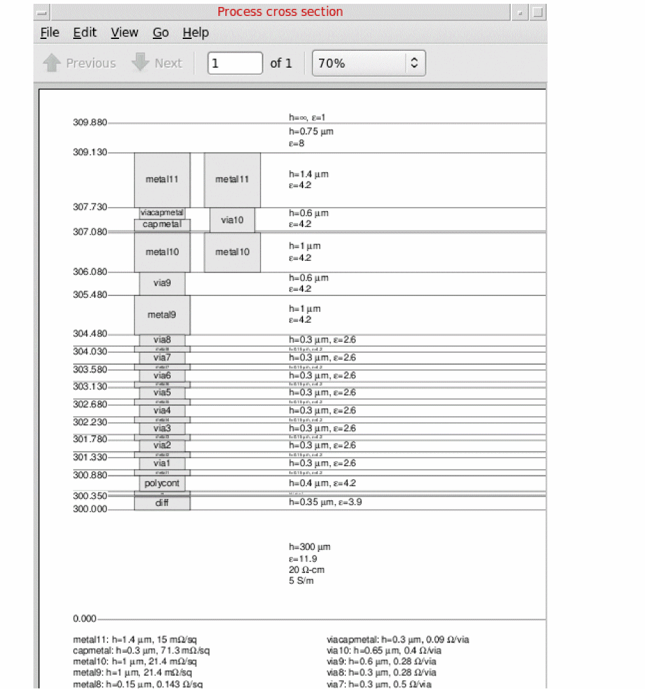
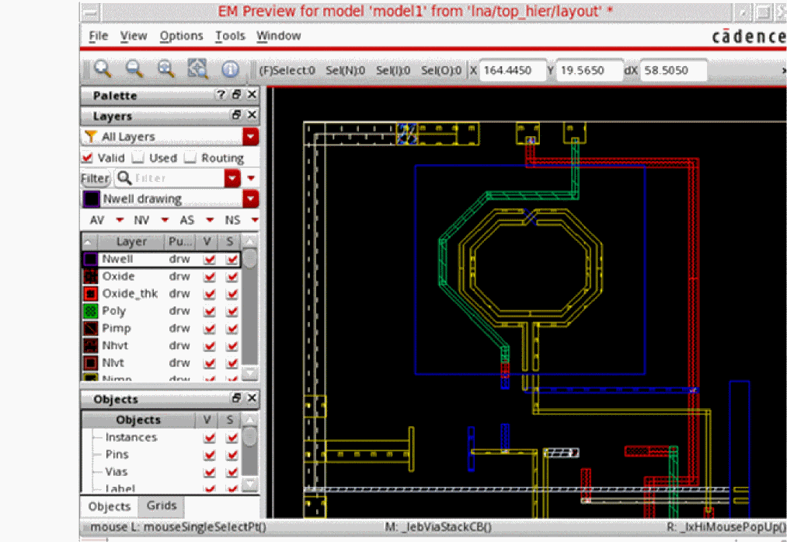
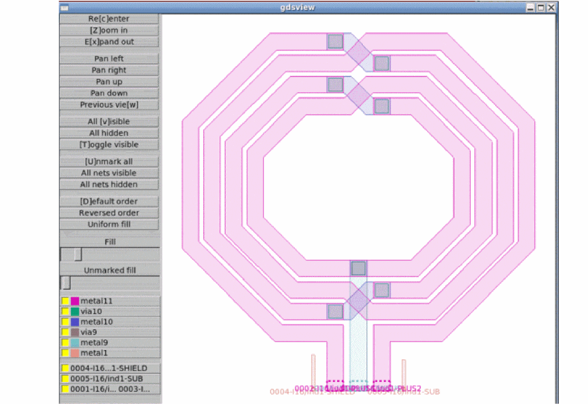
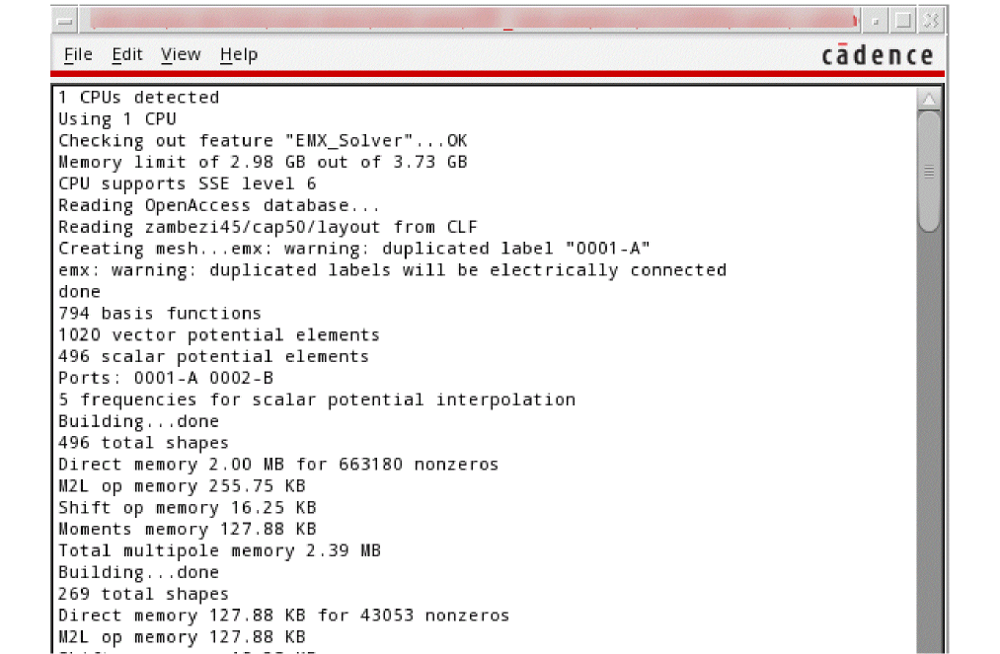
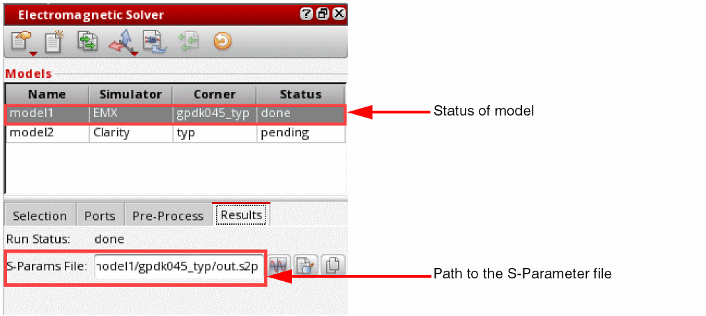

Running an EMX Simulation (IC Layouts Only)
EMX Planar 3D Solver simulates high-frequency, RF, and mixed-signal integrated circuits. It lets to simulate large RF circuit blocks accurately and efficiently, characterize the behavior of passive components, and analyze the parasitics due to interconnects.
To simulate a model using EMX and view the resulting mesh in Virtuoso 3D Viewer, you must ensure that the prerequisites are met.
To run a simulation using the EMX solver, perform the following steps:
-
Set the emxProcessCornerDirectory environment variable to specify the path to the directory where
.procfiles with process corner settings are saved. - (Optional) Set the emxProcessDefaultCorner environment variable to specify the default process corner name.
- (Optional) Set the emxLayerMap environment variable to specify the path to the layer map file to be used while sending models to the solver.
- Review the simulation settings on the EMX tab of the Simulation Settings form.
- In the Electromagnetic Solver assistant, create a new model in the Models section.
- Select EMX in the Simulator column for the model. You can select multiple EMX models and simulate them in parallel.
-
Review the layer stackup defined in the
.emprocfiles by choosing one of the following commands from the toolbar of the assistant:
The tool opens the PDF viewer and displays the scaled or unscaled layer stackup depending on the chosen command.
An example layer stackup is shown below.
 -
On the Selection tab of the Electromagnetic Solver assistant, select objects to be included in the model.
To include the complete layout in the model, select the Extract Full Cellview check box. -
On the Ports tab of the Electromagnetic Solver assistant, add port details. To ensure correctness, you can also validate the ports by using the Validate Ports command on this tab.
Only unreferenced ports are created for EMX models. - (Optional) Specify pre-processing options.
-
(Optional) Do one of the following to preview the model and verify the objects and shapes being sent to the solver for simulation:
-
Click Preview EM Layout on the Pre-Process tab.
The tool displays the preview of the selected shapes in the EM Preview of Model <model-name> window. An example is shown below. -
Choose Open Simulator – Preview Geometry on the toolbar of the Electromagnetic Solver assistant.
EMX uses its own viewer, GDSview, to display the shapes selected for the model. An example is shown below.
-
Click Preview EM Layout on the Pre-Process tab.
-
(Optional) Choose Open Simulator – Generate Mesh on the toolbar to generate a mesh for the model.
The tool sends the objects to the EMX solver, which creates a 3D model for the selected objects by identifying smaller sections that together form a mesh. If all the ports are valid and a mesh is successfully created, EMX saves the mesh in a.vmeshfile for your layout. Virtuoso then launches Virtuoso 3D Viewer to display the mesh. -
Choose Open Simulator – Mesh and Simulate on the toolbar to run simulation for the model.
EMX recreates the mesh and runs simulation. During the simulation run, EMX uses the settings specified on the General and EMX tabs of the Simulation Settings form to compute the electric field in each section of the mesh.
A log window is displayed to show the run status and summary of progress.
 -
After the run is complete, the status of the model changes to
doneand the results are loaded into the Results tab of the assistant. The path to the s-parameter file created by EMX is displayed in the S-Params field on this tab.
 - Click Create S-Parameter View on the toolbar of this assistant to create an extracted view for the model.
Related Topics
Reviewing the Mesh Created by EMX in Virtuoso 3D Viewer
Creating Extracted Views from Models
Return to top